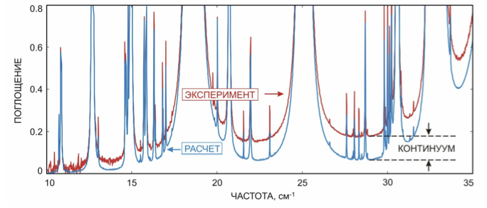

19 марта 2018 г., 16:19
Нижегородские физики поняли причину избыточного поглощения энергии водяным паром
Впервые предложен и обоснован физический механизм, объясняющий суперлоренцево поведение
крыльев молекулярных спектральных линий при больших отстройках от центра. Предложенный механизм
дополняет традиционные бимолекулярные механизмы поглощения излучения в газах и, в частности,
позволяет непротиворечиво интерпретировать наблюдаемый континуум водяного пара в спектральных областях,
соответствующих чисто вращательным переходам и фундаментальным колебаниям молекулы Н2О.
Авторы: Семенов В.Е., Третьяков М.Ю., Серов Е.А., Одинцова Т.А.
Водяной пар сильно поглощает электромагнитные волны в диапазоне от радио до ультрафиолета.
Это делает его основным парниковым газом атмосферы, а значит фактором, оказывающим значительное
влияние на климат Земли.
Энергия излучения, поглощаемая молекулами воды, расходуется в основном на возбуждение колебаний
в молекулярной структуре и на ее вращение. Поглощение происходит на строго определенных частотах,
густо рассеянных по всему спектральному диапазону. Это резонансные линии поглощения. Они видны даже
в спектре солнечного света. Еще в начале прошлого века было обнаружено, что в водяном паре кроме
дискретных резонансных линий наблюдается непрерывное, плавно меняющееся с частотой поглощение,
которое выглядит как подставка под линиями. Его назвали континуумом. Величина и физическая природа
континуума продолжают активно дискутироваться научным сообществом. Вплоть до настоящего времени
«противоборствуют» два подхода. Сторонники первого подхода относят континуум к поглощению одновременно
в двух молекулах воды «слипшихся» при столкновении (в димерах воды). Последователи второго считают,
что никаких димеров нет, а дело в том, что форма линий одиночных молекул (мономеров) при больших
отстройках от центра резонанса не соответствует существующим моделям, и континуум возникает,
как совокупный вклад дальних крыльев линий.
В пользу первого подхода свидетельствует прямое экспериментальное обнаружение димеров по их
характерному спектру. Раскручивание двойных молекул воды при поглощении миллиметровых волн приводит
к тому, что в спектре наблюдается
эквидистантная последовательность пиков, продолжением которой
является широкий пик в диапазоне длин волн около 0.5 мм, который тоже был недавно нами обнаружен.
На основе второго подхода построены эмпирические модели, которые продолжают совершенствоваться
и более-менее правдоподобно описывать экспериментальные данные о континууме. Их используют во всех
современных моделях распространении излучения в атмосфере. Поглощение в крыльях линий приходится при
этом увеличивать до 10 раз по сравнению с классическими моделями. Авторы моделей признают, что
физический механизм, объясняющий такое поведения крыльев, неизвестен.
Проблема сдвинулась с «мертвой точки», когда мы решили проанализировать спектр континуума в диапазоне
наиболее интенсивной спектральной полосы водяного пара, соответствующей вращательным резонансным линиям.
Этот спектр ранее не изучался, поскольку он расположен в труднодоступном для спектроскопии дальнем ИК
диапазоне. Исследование удалось осуществить в лаборатории при синхротроне SOLEIL, мощное излучение
которого пропускалось через водяной пар на трассе длиной более 150 метров, что и позволило
зарегистрировать слабое континуальное поглощение в широком диапазоне частот. Анализ полученного спектра,
показал, что ни один из подходов сам по себе не позволяет объяснить наблюдаемый континуум. Крылья линий
мономеров не складываются в нужную форму спектра, а максимально возможного количества димеров, которые
могли образоваться в условиях нашего эксперимента, не хватает, чтобы объяснить его амплитуду. Это
подтолкнуло нас к необходимости «примирения противоборствующих сторон» - к разработке нового подхода,
в котором и димеры, и дальние крылья линий мономеров вносят свои вклады. Нашелся и физический механизм,
позволяющий обосновать "завышенное" поглощение в области дальних крыльев линий. Он связан с вращением
молекул. Если считать, что вращение при столкновении обрывается мгновенно, как было бы для
молекул-шариков идеального газа, то дальнее крыло линии спадает квадратично с ростом частоты отстройки.
Очевидно, что при столкновении реальных молекул, имеющих определенную структуру, окруженную электрическим
полем, вращение будет тормозиться плавно (монотонно), в течение некоторого конечного времени. Это
приведет к более быстрому (экспоненциальному) спаданию дальнего крыла линии. Но если за время торможения
молекула успевает сделать несколько оборотов, то торможение получается уже немонотонным. Это приводит к
возникновению небольшого пика в крыле линии на отстройке от центра, равной характерной частоте этой
немонотонности. Ширина пика обратно пропорциональна времени торможения. Соответствующего подъема крыла
линии оказывается достаточным для объяснения избыточного поглощения.
Полученный результат свидетельствует о необходимости переработки существующих моделей распространения
излучения в атмосфере, что позволит продвигаться к правильному пониманию и предсказанию происходящих
климатических изменений.

М.Ю. Третьяков, зав. отделом микроволновой спектроскопии ИПФ РАН (http://mwl.sci-nnov.ru/index.html#/people/permanent/tretyakov);
Т. А. Одинцова, мл. научный сотрудник отдела (http://mwl.sci-nnov.ru/index.html#/people/permanent/odintsova)
Оригинальную статью можно посмотреть здесь.